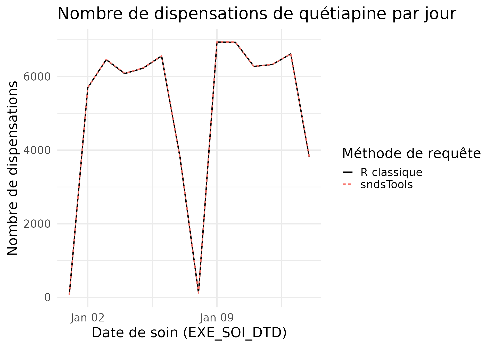

Comparaison sndsTools vs R classique
Gladys Baudet
2026-03-03
Source:vignettes/benchmark_sndstools_vs_r.Rmd
benchmark_sndstools_vs_r.RmdLa requête
On appelle la fonction extract_drug_dispenses() en
indiquant la date de début de la période d’intérêt, la date de fin, et
l’ATC qui nous intéresse.
source(here::here("sndsTools.R"))
conn <- connect_oracle()
t0 = Sys.time()
output_quetiapine_sndstools <- extract_drug_dispenses(
start_date = as.Date(date_deb),
end_date = as.Date(date_fin),
atc_cod_starts_with_filter = atc_quetiapine,
dis_dtd_lag_months = 6, # pour requêter les liquidations arrivant après la date de soin.
conn = conn
)
timed_sndsTool = difftime(Sys.time(), t0, units = "secs")
print(paste(
"Temps de calcul - sndsTools : ", round(timed_sndsTool), "secondes" # 162s
))On filtre ER_PRS_F sur les dates choisies ainsi que les
filtres habituels, puis on fait une jointure avec ER_PHA_F
filtrée sur les CIP de quétiapine récupérés dans
IR_PHA_R.
library(ROracle)
drv <- dbDriver("Oracle")
conn <- dbConnect(drv, dbname = "IPIAMPR2.WORLD")
Sys.setenv(TZ = "Europe/Paris")
Sys.setenv(ORA_SDTZ = "Europe/Paris")
# Pour requêter les liquidations arrivant après la date de soin.
date_fin_6m <- "2023-08-01"
dcir_join_keys <- c(
"DCT_ORD_NUM",
"FLX_DIS_DTD",
"FLX_EMT_ORD",
"FLX_EMT_NUM",
"FLX_EMT_TYP",
"FLX_TRT_DTD",
"ORG_CLE_NUM",
"PRS_ORD_NUM",
"REM_TYP_AFF"
)
erprsf <- tbl(conn, "ER_PRS_F") |>
filter(
FLX_DIS_DTD >= to_date(date_deb, "YYYY-MM-DD") &
FLX_DIS_DTD < to_date(date_fin_6m, "YYYY-MM-DD") &
EXE_SOI_DTD >= to_date(date_deb, "YYYY-MM-DD") &
EXE_SOI_DTD <= to_date(date_fin, "YYYY-MM-DD") &
DPN_QLF != 71 &
CPL_MAJ_TOP < 2
) |>
select(c(dcir_join_keys, "EXE_SOI_DTD", "BEN_NIR_PSA", "PSP_SPE_COD"))
irphar_quetiapine <- tbl(conn, "IR_PHA_R") |>
filter(PHA_ATC_CLA == atc_quetiapine) |>
select(PHA_ATC_CLA, PHA_CIP_C13) |>
distinct()
erphaf <- tbl(conn, "ER_PHA_F") |>
select(c(dcir_join_keys, "PHA_PRS_C13", "PHA_ACT_QSN")) |>
inner_join(irphar_quetiapine, by = c("PHA_PRS_C13" = "PHA_CIP_C13"))
er_ete_f <- tbl(conn, "ER_ETE_F") |>
select(c(dcir_join_keys, "ETE_IND_TAA"))
output_quetiapine_classique <- erprsf |>
inner_join(erphaf) |>
left_join(er_ete_f) |>
filter(ETE_IND_TAA != 1 | is.na(ETE_IND_TAA))
t0 <- Sys.time()
output_quetiapine_classique <- output_quetiapine_classique |>
collect() |>
select(
BEN_NIR_PSA,
EXE_SOI_DTD,
PHA_ACT_QSN,
PHA_ATC_CLA,
PHA_PRS_C13,
PSP_SPE_COD
) |>
distinct()
timed_classique <- difftime(Sys.time(), t0, units = "secs")
print(paste(
"Temps de calcul - méthode classique : ", round(timed_classique), "secondes" # 39s
))La requête sndsTools est plus lente que la requête classique, car elle effectue des requêtes pour chaque mois de flux demandé, comme le recommande les bonnes pratiques du portail de la CNAM.
Les résultats
En modifiant la colonne EXE_SOI_DTD pour ne récupérer
que le jour de l’événement, on vérifie que chaque ligne de la sortie
classique est dans la sortie de sndsTools et vice versa.
# Comparaison ligne à ligne
line_by_line_differences <- output_quetiapine_classique |>
mutate(EXE_SOI_DTD = as_date(EXE_SOI_DTD)) |>
anti_join(
output_quetiapine_sndstools |>
mutate(EXE_SOI_DTD = as_date(EXE_SOI_DTD))
) |>
tally() # Si les deux méthodes sont identiques, ce résultat devrait être 0
print(paste("Nombre de lignes différentes entre les deux méthodes : ", line_by_line_differences)) # 0
plot_data <- rbind(
output_quetiapine_sndstools |>
group_by(EXE_SOI_DTD) |>
tally() |> mutate(requete="sndsTools"),
output_quetiapine_classique |>
group_by(EXE_SOI_DTD) |>
tally() |> mutate(requete="R classique")
)
write.csv(
plot_data, here::here("inst/extdata/benchmark_sndstools_vs_r.csv"),
row.names = FALSE
)
library(ggplot2)
plot_data <- read.csv(here::here("inst/extdata/benchmark_sndstools_vs_r.csv"))
# Graphique
ggplot(
data = plot_data,
aes(
x = lubridate::as_date(EXE_SOI_DTD), y = n,
color = requete, linetype = requete
)
) +
geom_line()+
scale_color_manual(values = c("R classique" = "black", "sndsTools" = "#F8766D")) +
theme_minimal(base_size = 20) +
labs(
title = "Nombre de dispensations de quétiapine par jour",
x = "Date de soin (EXE_SOI_DTD)",
y = "Nombre de dispensations",
color = "Méthode de requête",
linetype = "Méthode de requête"
)